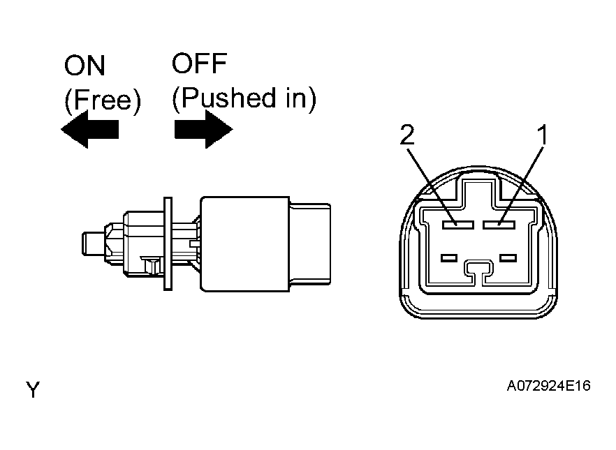
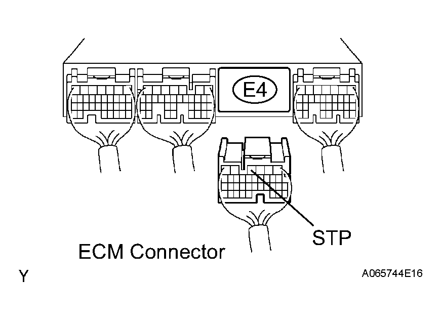

Inspection Procedure
- CHECK OPERATION OF STOP LIGHT
- Check whether the stop lights turn on and off normally when the brake pedal is depressed and released.
OK: Stop lights turn ON when brake pedal is depressed.
NG: REPAIR OR REPLACE STOP LIGHT SWITCH CIRCUIT
OK: Go to Next Step
- Check whether the stop lights turn on and off normally when the brake pedal is depressed and released.
- READ VALUE OF INTELLIGENT TESTER (STP SIGNAL)
- Connect the intelligent tester to the DLC3.
- Turn the ignition switch ON and turn the tester ON.
- On the tester, enter the following menus: DIAGNOSIS / ENHANCED OBD II / DATA LIST / PRIMARY / STOP LIGHT SW.
- Read the value displayed on the tester.
Standard
BRAKE PEDAL OPERATION - SPECIFIED CONDITIONSBrake Pedal Operation Specified Condition Depressed STP Signal ON Released STP Signal OFF
OK: CHECK FOR INTERMITTENT PROBLEMS
NG: Go to Next Step
- INSPECT STOP LIGHT SWITCH ASSEMBLY
- Check the resistance when the stop light switch is ON and OFF.
Standard resistance
TESTER CONNECTION - SPECIFIED CONDITIONSSwitch Position Tester Connection Specified Condition ON (Free) 1 - 2 Below 1 Ω OFF (Pushed in) 1 - 2 10 kΩ or higher
NG: REPLACE STOP LIGHT SWITCH ASSEMBLY

Courtesy of © TOYOTA, LICENSE AGREEMENT TMS1002OK: Go to Next Step
- Check the resistance when the stop light switch is ON and OFF.
- CHECK HARNESS AND CONNECTOR (STOP LIGHT SWITCH - ECM)
- Disconnect the S8 stop light switch connector.
- Disconnect the E4 ECM connector.
- Measure the resistance of the wire harness side connector.
Standard resistance (Check for open)
TESTER CONNECTION - SPECIFIED CONDITIONSTester Connection Specified Condition S8-1 - STP (E4-4) Below 1 Ω Standard resistance (Check for short)
TESTER CONNECTION - SPECIFIED CONDITIONSTester Connection Specified Condition S8-1 or STP (E4-4) - Body ground 10 kΩ or higher
NG: REPAIR OR REPLACE HARNESS OR CONNECTOR

Courtesy of © TOYOTA, LICENSE AGREEMENT TMS1002OK: REPLACE ECM